FSTS Pilot Newsletter, August 2025
Hi everyone,
It has been 9 weeks since the start of the microgreens pilot project. In the 5 weeks since my last email update we have gone from 3 to 20 harvests, new challenges have surfaced, and I have made some plans for the continuity of the project when I leave.
Before I dive into the update, I just wanted to say thank you for everyone’s well-wishes and support from afar. I've taken every bit of encouragement and advice to heart.
Synopsis
- Farming has ramped up
- Unexpected challenges keep cropping up
- With my last two weeks here I am prioritising experimentation and project continuity
Context
In my previous email I forgot to share about the nutrition situation in Zervou Camp, and my impetus for trialling this here.
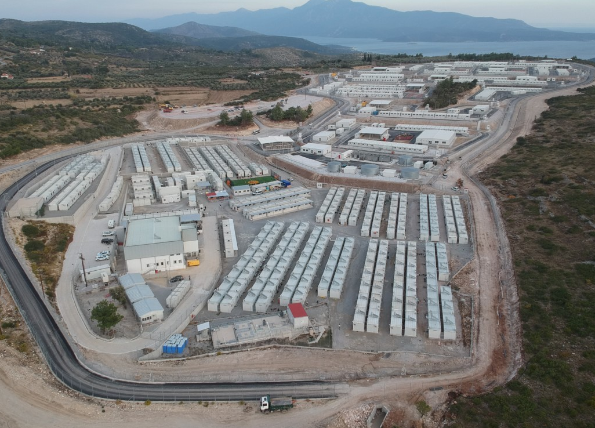
^Zervou Camp
3 years ago, I visited Zervou to do some focus groups and determine if there was any demand for a product that I was helping with at the time: ‘VitaeGUM’, a multi-vitamin chewing gum that could also clean your teeth. I was struck by how little fresh food was incorporated in the diet here, and that stuck with me.
Today, the camp is at least 5 times more populated than it was the last time I was here, and the food distributed is still a huge complaint. During my preparation for this pilot, one NGO shared that food was ‘often distributed expired, still frozen or visibly raw’. I learnt from a chance meeting with someone working for a delivery company that the food in Zervou is packed in Athens and delivered by boat, only to be reheated and served in the camp. No vegetables are served, and one community member shared that in his one month here the only fresh food he had received was a single orange. This is troubling particularly because refugees here do not receive cash assistance to purchase their own food, they have a long confinement period the moment they arrive, and the camp is far from the nearest town.
I wanted to find a solution that could supplement the already carbohydrate-dense food distributed in the camp with a micronutrient-rich addition. Hence, microgreen farming.
Where the project is at
This is what the indoor and outdoor set-up looks like at capacity right now:
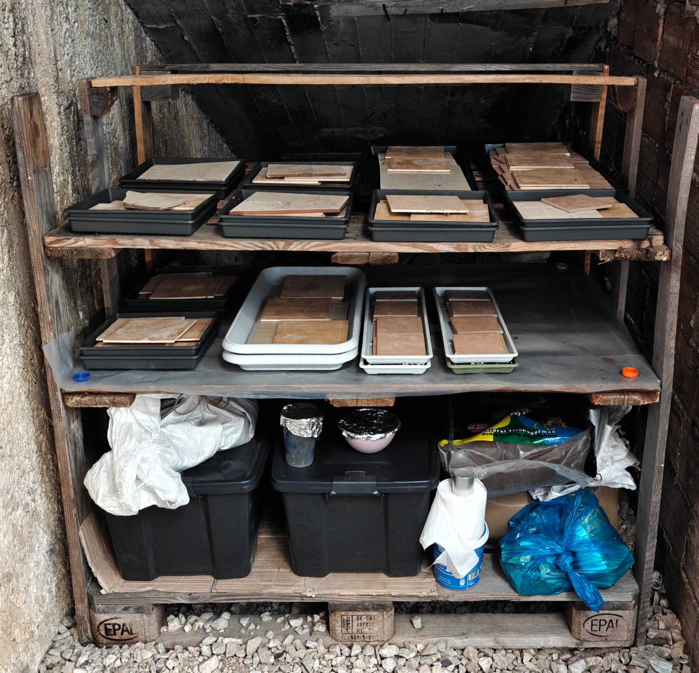
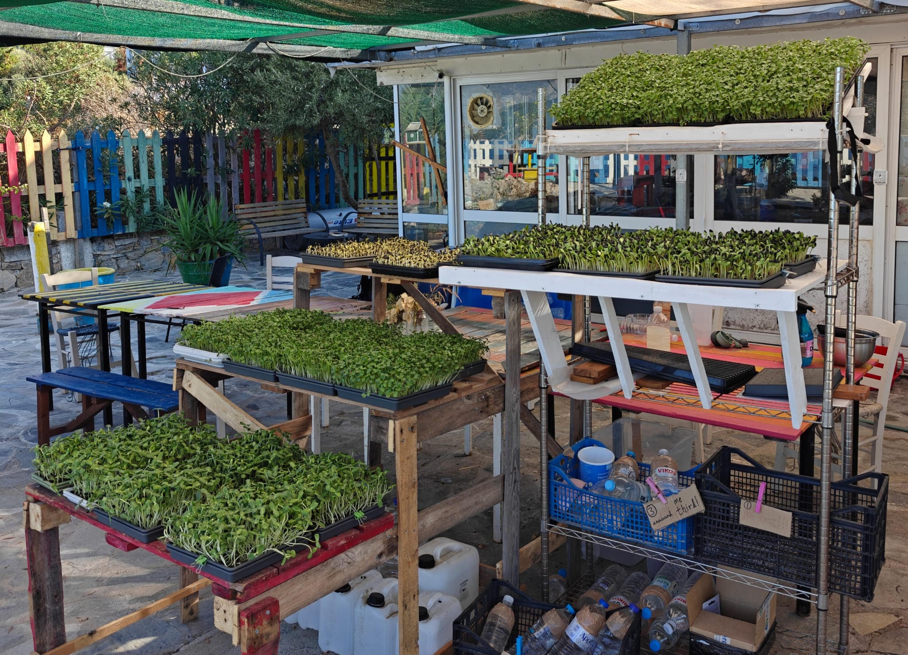
It’s a small set-up! But with the whole process from sowing to harvesting taking 6-8 days, the farm produces a steady turn-over. I am yet to benchmark the statistics I’ve derived against the cost-effectiveness of other micronutrient-focused solutions, or the output of commercial microgreen farms. Nonetheless, from my extremely subjective outlook, I think we’re doing ok.
|
Since starting the project, I’ve been fortunate to be supported by some inspiring individuals: Diaa, Hamid, Hassan, Sadiq, Mohsin, Mousa, Hind. All of this has been something of an experiment, and with each day we’re learning a little about what works and what doesn’t. I’m grateful to have people who’ve been willing to figure this out with me.
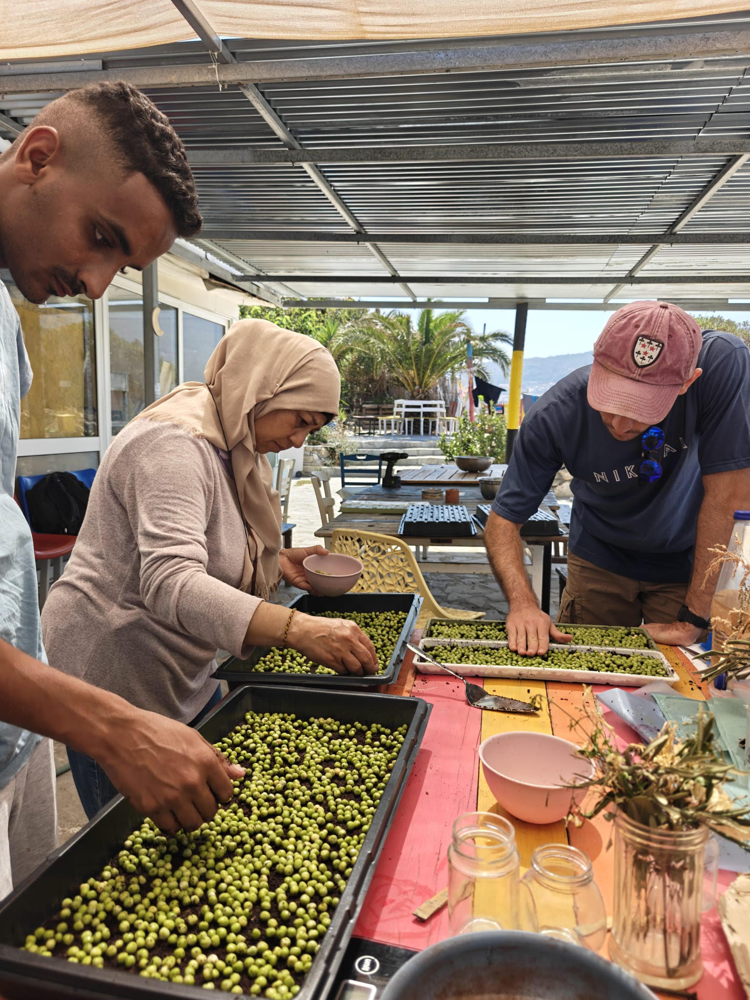
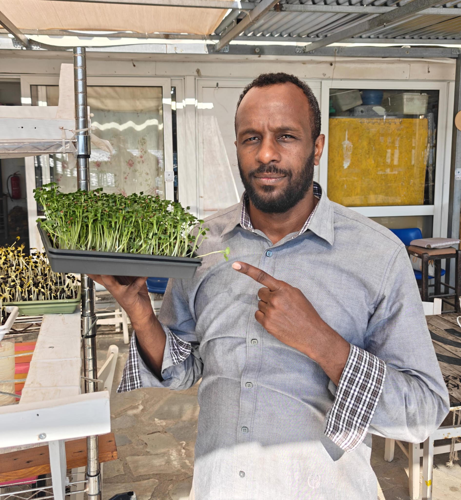
L: Mousa, Hind, and I /// R: Mohsin
The produce from the harvests has either remained to be eaten by the community at selfm.aid during mealtimes, or been delivered to La Maison, which does bigger food distributions. In total, we have supplemented 1607 meals.
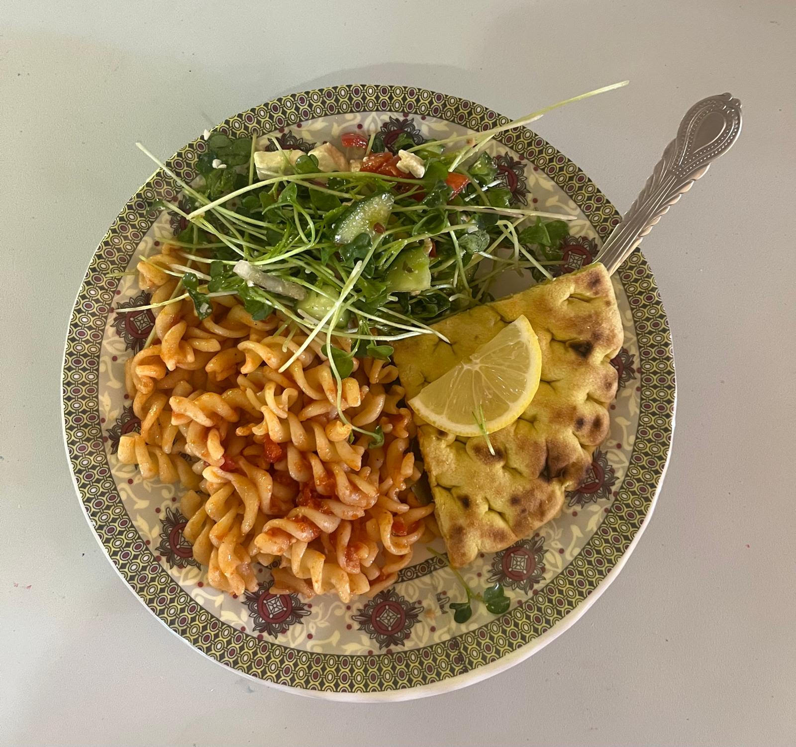
^Meal served by La Maison yesterday
With fairly steady harvests, and the community having no complaints about the microgreens incorporated in their food, I’m happy to conclude that conceptually this is one way of improving the diet diversity of displaced communities.
I’m particularly encouraged that we have survived two heatwaves with less than 7 litres of water per day, and that I’ve found members of the community who have been interested and engaged in the project.
There’s still work to be done to determine whether it is cost-effective & easy enough to be something to recommend more widely to humanitarian actors, but that can happen when I leave the island.
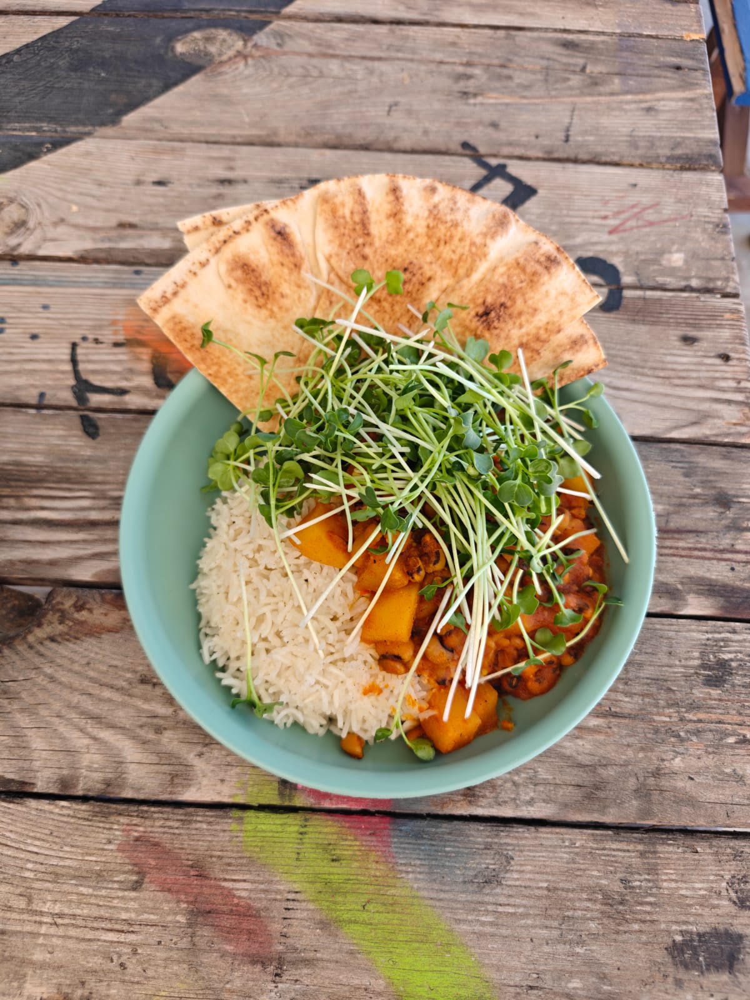
Challenges
That said, the last 5 weeks have had their fair share of issues!
- Mould
After a miraculous first two problem-free weeks, I assumed we were just really good at this… but wow was I wrong!
The problems began on the fifth batch of sunflower seeds. I had attempted to streamline the process a little (read: be lazy) by watering the indoor trays only once per day. This didn’t seem to cause any issues until the sunflower seeds developed this spiderweb-like white fuzz. Then I noticed that two of these trays had a maggot problem.
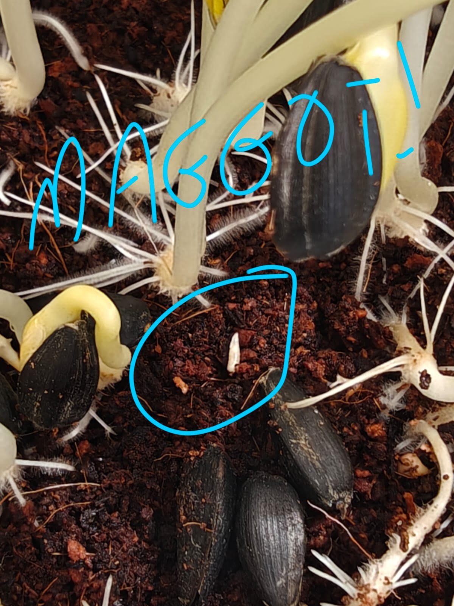
Warm and moist environments encourage mould-growth, and mould attracts flies which lay eggs, causing maggot infestations. After the initial disappointment of throwing away the couple trays that this affected, the mould problem never seemed to go away. I now suspect that the whole batch of seeds has an issue (or maybe my storage containers haven’t been dry enough).
With almost all my sunflower trays since I’ve had some amount of mould until they go out into the sunlight (which suppresses it). The trouble is that going out into the sun too early discourages the plant from growing taller, so we’re kind of caught between shorter plants with lower risk of mould, or taller plants with higher risk of mould.
The compromise has been that now I spend most nights picking out the seeds that seem to be the ‘vectors’ of the mould issue, and hoping (with little success) that my diluted hydrogen peroxide does the trick at sterilising the tray as far as possible.
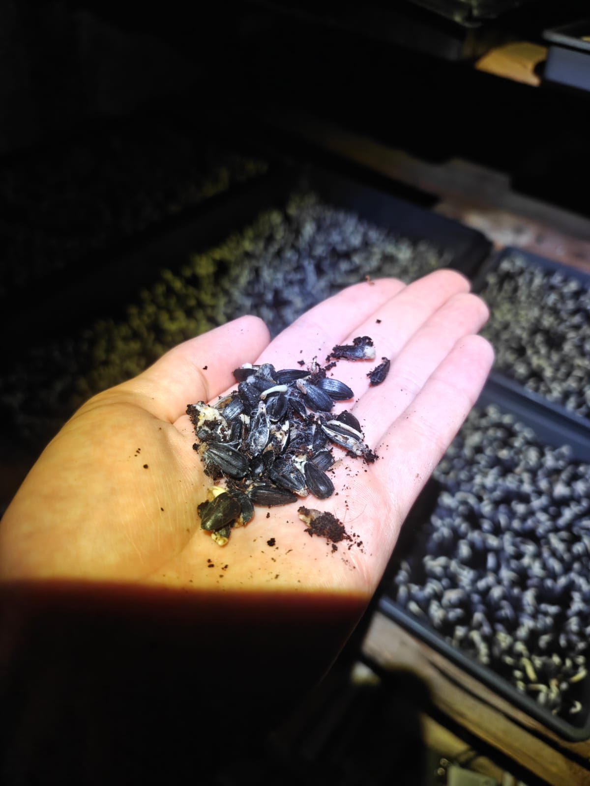
^a night spent picking out mould seeds with my headlamp
- Pests
Early on, we had lots of small insects that were attracted to the radishes. They appeared to be harmless because they didn’t seem to eat the plants, and after we picked them out the first week or two they stopped returning.
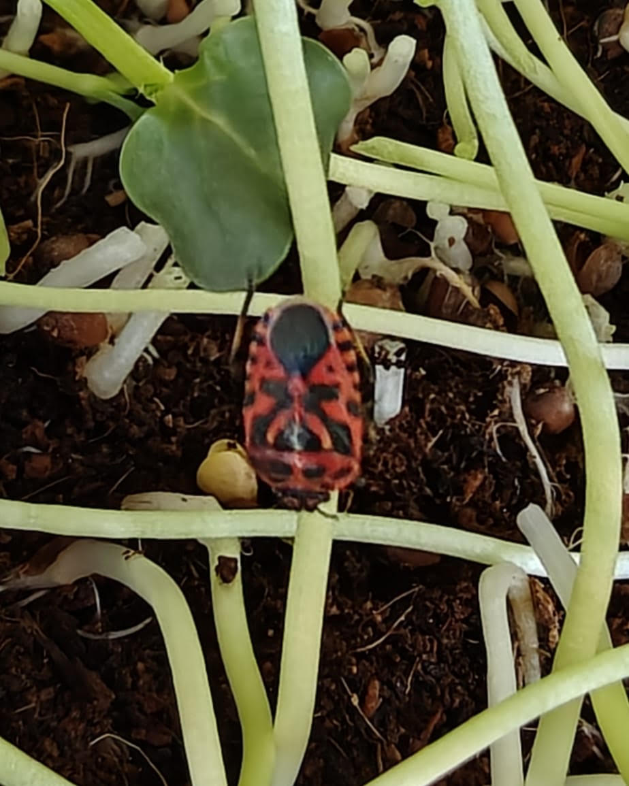
However, the last month has seen the emergence of a much more formidable foe. I thought initially it was a cat, but now, I’m quite sure it’s a rat attacking the seeds at night.
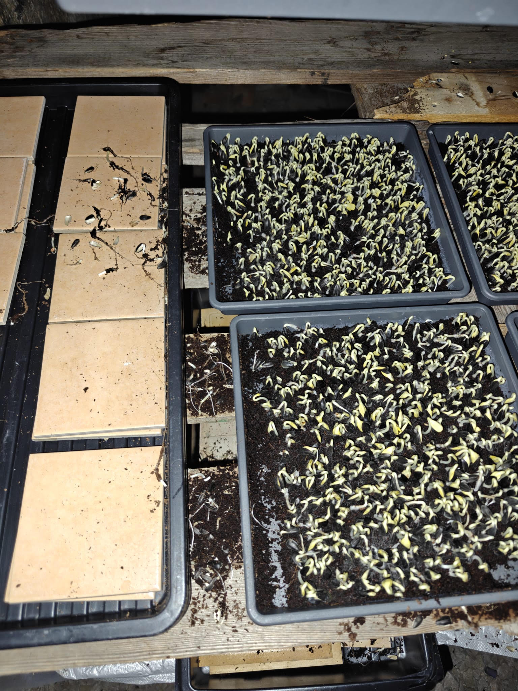
^the aftermath of a cat / rat attack (these trays were covered by another tray with tiles on top, and the animal still found a way to get to the edges!)
This has been incredibly frustrating, and now I’ve resorted to bringing my indoor trays outdoors just for the night (since it's cool enough to be outdoors anyway) because the rats seem less brave in the open!
- Community volunteers getting transferred
At the time of my last update, I had just gotten the news that Diaa (my team leader at the time) was being transferred to another camp. By some quite remarkable stroke of luck, this has happened a further 4 times since in the last 5 weeks to Hassan, Sadiq, Mohsin, and now Mousa. I keep training motivated people, and then see them leave in a state of a lot of confusion, unsure what the transfer means for their future and worried about their change of circumstances.
The whole transfer ‘situation’ can be a good thing, because it means one’s asylum claim hasn’t been ‘lost’. However, forcibly displaced people being re-displaced by the state they are seeking safety from, and losing the semblance of community that they have built, has been hard to witness.
From a project perspective, the high turnover of people has derailed the sustainability of the project, but has also allowed me to work closely with people whom I’m very grateful to have met.
- General difficulty
I started this project hoping to show that this was an easy, no-brainer solution that organisations should adopt. However, in truth, the last few weeks have been more difficult than I anticipated. Outside of the issues I’ve mentioned so far, these plants just require a good amount of care and understanding. Germination is the most fragile period of a plant’s life cycle, and microgreens farming has been that on repeat. I've tried really hard to make this look easy to encourage more of the 'international' staff/ volunteers to get involved, but I spend way more time than anyone else at the community centre, and people soon catch on to how tedious it is.
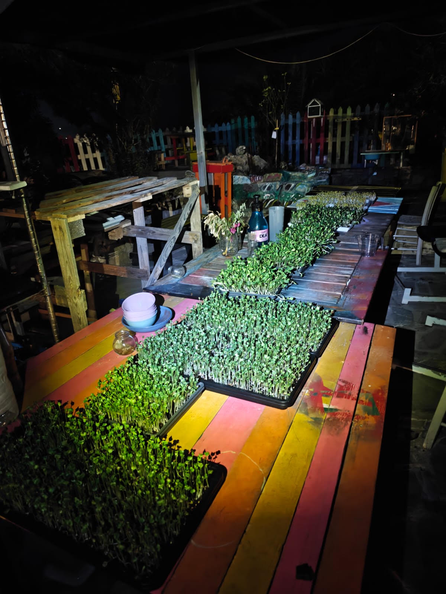
^another night tending to the plants
Maintaining a schedule has been helpful, but this has been more art than science. It has taken some time to understand what the plants need at different moments, and I see that being something that might be hard to ask for from organisations that I’m suggesting replicate this → that they have a couple people dedicated to managing the project, and patience for things to go wrong for a while.
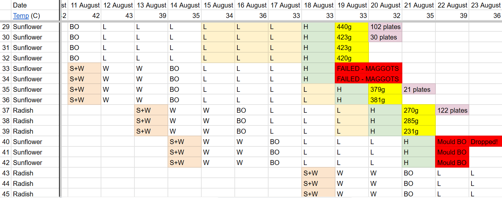
^a snapshot of my farm schedule
Without the controlled environment of a more typical commercial set-up (indoors, with temperature control, grow-lights, clean water, etc.) I’m often thinking about my water constraints, the temperature, what will be in direct sunlight at different times of the day, and the risk of mould and pests. Perhaps I’m just not cut out for farming! Something is always at risk of dying, and that’s a heavy mental load. I've had to toss away 6 trays so far (8-9% of the total), and each time is really painful.
I remember how the rice farmers I met in Indonesia (during my last job) told me about their mood significantly affecting their harvest. Honestly, I dismissed that at the time. But right now - I completely get it - I am so superstitious at the moment! When my mind is in two places things do go wrong (for instance, we don’t get the yield I expect, trays get dropped, etc.).
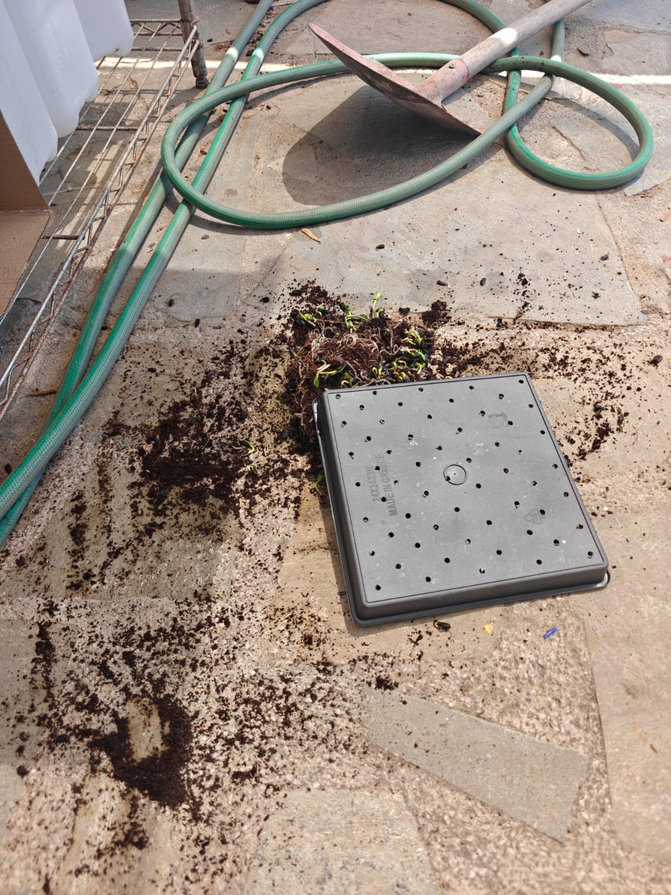
^ a dropped tray
It has also been really helpful being able to give Ahmed, co-founder of Taza Farms, a message or a call when I need help. I think to make this scalable I will need to be able to offer that kind of support to organisations who are just starting out.
Next steps
With only two weeks left before the EU kicks me out, I’ve decided that it does not make sense to keep running the farm at capacity till the day I leave. I think the numbers that I have already are enough to work with. Instead, I’ll be prioritising the following things:
- Experiments
In the last week, we have begun running several experiments to test new crops and techniques, as well as get a sense of what corners can be cut and if there are creative ways to deliver crops to the community.
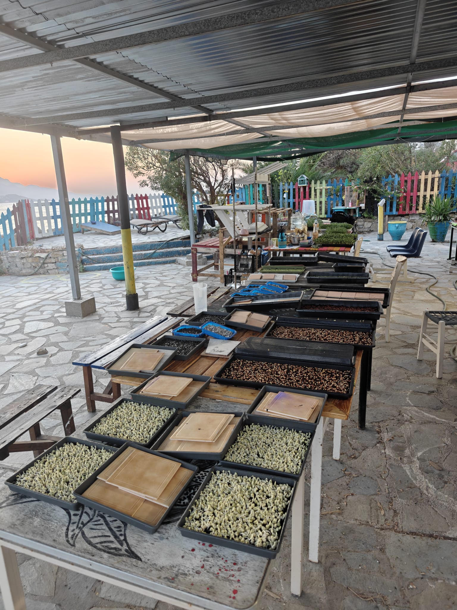
^experimentation in full swing
- New crops and techniques:
- Peas (new crop)
- Peas are going ok so far!
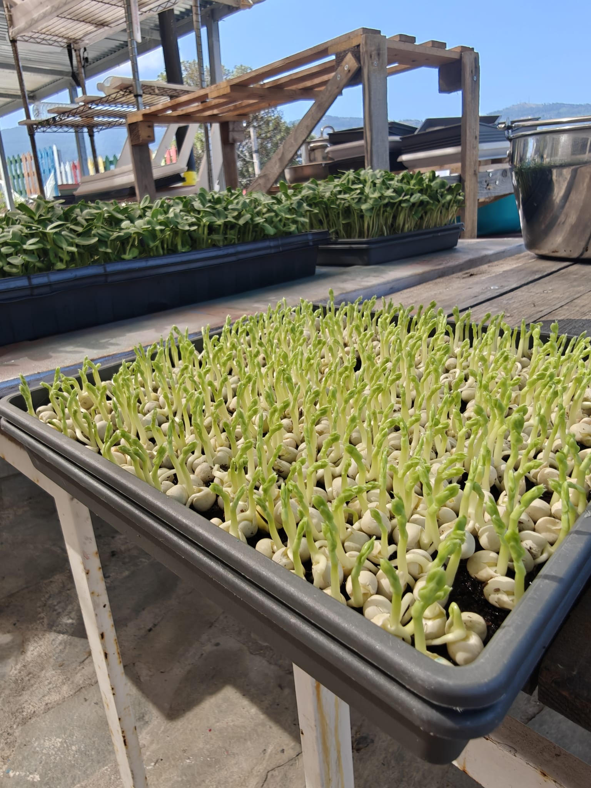
^peas! (photo from today)
- Growing sunflowers without soaking them before sowing
- Not soaking the sunflower seeds has worked fine, but hasn’t seemed to reduce the instance of mould
- Cutting corners:
- Reusing coco-coir
- We have dried out used coco-coir substrate and mixed it in to form the base of new trays
- This could cut costs dramatically as at the moment coco-coir is 25-50% of the cost of all trays
- Using tap water
- I determined early on that the tap-water in Vathy was really poor (high EC-content), but it would be helpful to learn how much this matters and if one can get away with using it anyway
- This could affect how open communities without the cleanest water might be to trying this
- New modes of delivery:
- Using disposable boxes distributed in the camp
- I have always wondered if it were possible to have households grow these crops for themselves, or if it would be more efficient to centralise the growing process with a community farm (like we have done)
- We are now testing growing radishes using the disposable boxes available to everyone in the camp, using only materials easily available (tap water, soil from the ground, gravel)
- So far - this is looking promising! If it goes well, I am in contact with Eurorelief (the only NGO working inside the camp) and we will look into providing seeds to families that are keen to grow microgreens for their own households
- This could be a very inexpensive way to go about it, + has the advantage of the mental health benefits of gardening
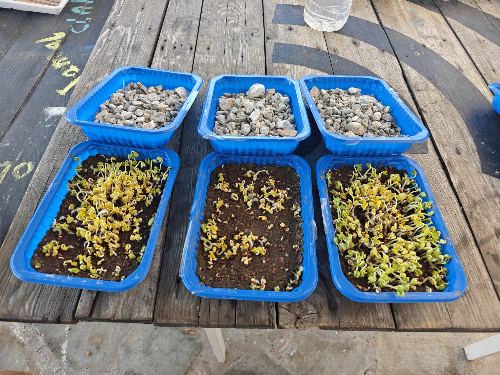
^growing radishes in disposable boxes distributed in the camp (photo from today)
- Relocating set-up
The lack of a consistent team at selfm.aid has made me decide that with me leaving, it would be right to halt the project there, and bring the set-up to an NGO that can keep it alive. La Maison (the food distribution NGO) has been keen for me to build them their own set-up for some time, and we have agreed that I will bring all the equipment and inputs to their site to manage this instead. I think it makes sense as they have a wider reach when it comes to food distribution anyway, and this will happen on the 15th of September.
- Data collection
I need to evaluate the success of the pilot with more perspective from the community. To do this, I’ll be taking the next two weeks to collect feedback and thoughts from the community about having microgreens included in their diet. This is quite a big undertaking with the language barrier, and I feel like I have definitely left this too late.
- Shooting instructional videos
I want to shoot at least one video aimed at helping households grow microgreens on their own using materials they can find in the camp (provided that experiment goes well). If possible, I think it could be worthwhile shooting another video to speak about growing microgreens with a low-tech set-up (most videos online are in quite modern urban farms) that another grassroots organisation can follow. I intend to write a replication guide too, but imagine a video might be more accessible - open to any ideas on this front!
Wider reflections
The last month has been one of quite a bit of grief here. I have been reminded of how privileged I am that my family resides in a safe country. I have been reminded of how privileged I am that my friends have access to proper mental health services. In the midst of this I’ve found myself feeling proximate but quite powerless, quite unsure how to offer anything more than kind words when the world is so unfair.
I met someone yesterday who is the same age as me. We spoke for some time (hampered by my very, very broken Farsi). At one point he shared that he had lost his whole family to the Taliban, that Afghanistan wasn’t safe for Uzbeks and Hazaras. Now, he was on his way to France, where he knew no one, but hoped to find a better life for him and his wife. I’ve heard this story multiple times before, but this time it struck a nerve. I really, really hope that works out for them. Many of my friends have found life beyond the Greek camps hard and lonely.
I find myself wondering when as a society we’ll open our eyes to the lottery of birth, and when we’ll see people as people. Increasingly I’m thinking maybe I do believe in open borders.
I wonder if my approach of thinking about technical issues and not political ones is taking the easy way out; if my almost apologetic-for-having-an-opinion nature is cowardice; if the good fortune I have to not need to speak up for myself means I should speak up for others who don’t have a voice.
I don’t know what that looks like yet, but it’s something I hope to keep thinking about.
______________
Anyhoo, thank you for taking the time to read this. Do feel free to drop me a note with any thoughts and feedback. I hope to have another update next month about how this project rounded off, and with two outputs: (A) a report to evaluate the pilot; and if that's positive, then also (B) a guide for organisations looking to replicate this.
I'll miss my 8pm routine of slapping on a headlamp and tending to the plants. At the moment it feels like things are moving too quickly, and I wished they'd slow down.
I hope this email has found you well,
Ben 🪣
6 September 2025